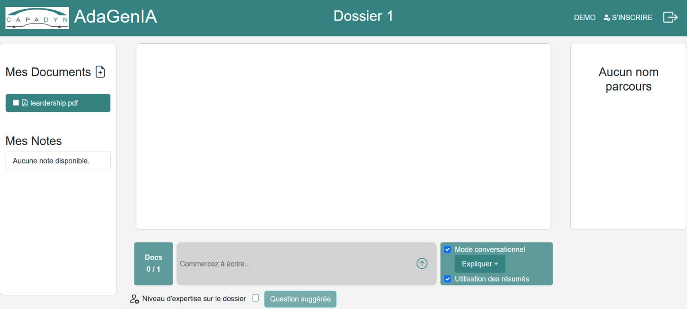
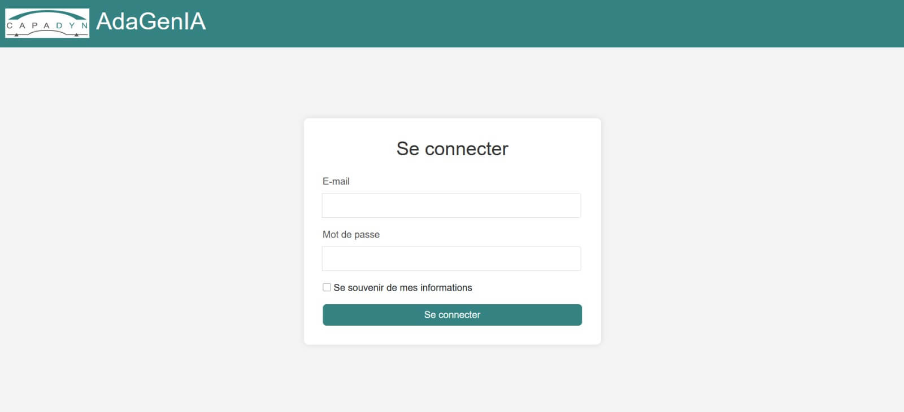
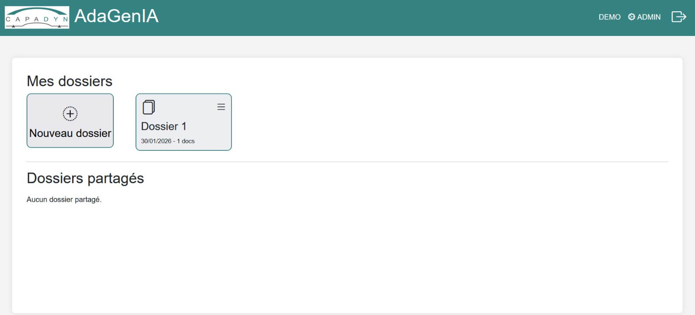

GENIA
Interface frontend complète pour une solution d'intelligence artificielle locale. Développée en collaboration avec Scope.io qui fournit le backend IA (modules VLLM, mini ChatGPT). Notre rôle : conception et développement de l'interface utilisateur en Twig/HTML avec intégration API.
- PHP / Twig
- HTML / CSS
- Intégration API Scope.io
- Docker
- Architecture locale sécurisée
Problématique
Les entreprises ont besoin d'une interface professionnelle pour exploiter les IA locales, mais elles n'ont pas toujours les compétences techniques pour développer une frontend qui communique efficacement avec les systèmes IA complexes.
Objectifs
- Créer une interface intuitive pour les utilisateurs non techniques.
- Faciliter l'interaction avec l'IA locale fournie par Scope.io.
- Gérer l'organisation des documents et dossiers utilisateurs.
- Assurer une expérience utilisateur fluide sans JavaScript complexe.
{kind=link}

Interface principale GENIA : gestion des dossiers, documents et chat IA. Frontend développé par nous, backend IA fourni par Scope.io.
Authentification sécurisée et navigation
L'application commence par une page de connexion sécurisée :
- Formulaire d'authentification avec email et mot de passe.
- Option "Se souvenir de mes informations" pour faciliter l'accès.
- Interface professionnelle avec branding CAPADYN/AdaGenIA.
- Accès direct à l'espace de travail après connexion.
Toutes les communications sont chiffrées et les sessions gérées localement sans dépendance à des services externes.
{kind=link}

Page de connexion sécurisée avec option de mémorisation des informations.
Organisation des dossiers et documents
L'interface principale permet d'organiser le travail de manière structurée :
- Mes Dossiers : Création et gestion des projets avec bouton "Nouveau dossier".
- Dossiers Partagés : Collaboration en équipe avec accès contrôlé.
- Mes Documents : Upload de fichiers PDF comme "leadership.pdf".
- Mes Notes : Annotations personnelles sur les documents.
Chaque dossier affiche la date de création et le nombre de documents, permettant une navigation rapide et intuitive.
{kind=link}

Interface de gestion des dossiers avec organisation claire et accès rapide.
Interface IA et fonctionnalités avancées
Le cœur de l'application : l'interface conversationnelle avec l'IA :
- Zone de chat : "Commencez à écrire..." pour poser des questions.
- Mode conversationnel : Dialogue naturel avec l'IA.
- Expliquer+ : Explications contextuelles approfondies.
- Utilisation des résumés : Génération et exploitation automatique.
Options avancées :
- Niveau d'expertise : Adaptation des réponses au contexte utilisateur.
- Questions suggérées : Suggestions basées sur le contenu des documents.
- Indicateur de documents : "Docs 0/1" montrant les fichiers utilisés.
Partie technique & compétences
Stack technique
- Frontend : PHP / Twig pour les templates HTML.
- Backend IA : Fourni par Scope.io (modules VLLM, mini ChatGPT).
- Intégration : Communication API avec le backend IA.
- Docker : Containerisation pour déploiement simplifié.
- HTML/CSS : Interface responsive sans JavaScript complexe.
Compétences mises en avant
- Développement frontend en Twig/HTML avec intégration API.
- Conception d'interface utilisateur intuitive et professionnelle.
- Collaboration avec Scope.io pour l'intégration backend IA.
- Gestion de l'organisation des documents et dossiers utilisateurs.